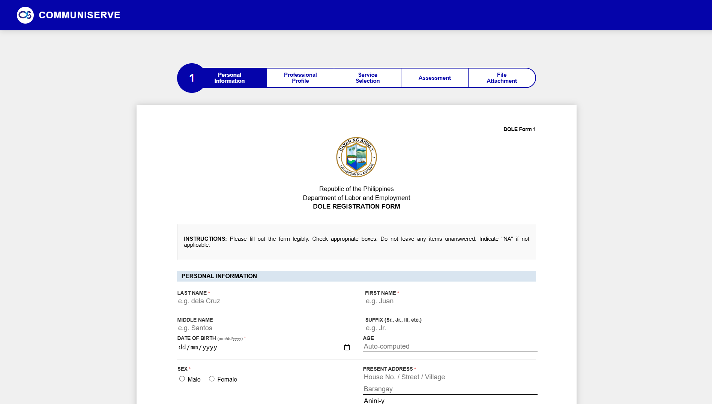
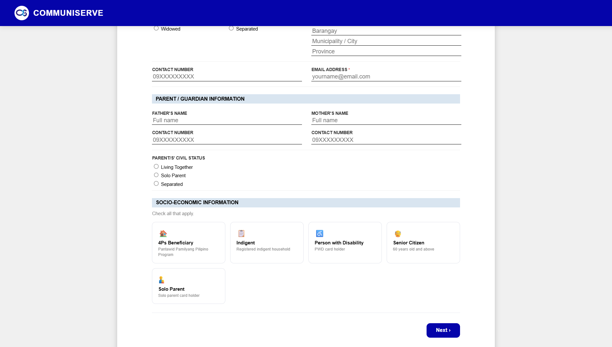
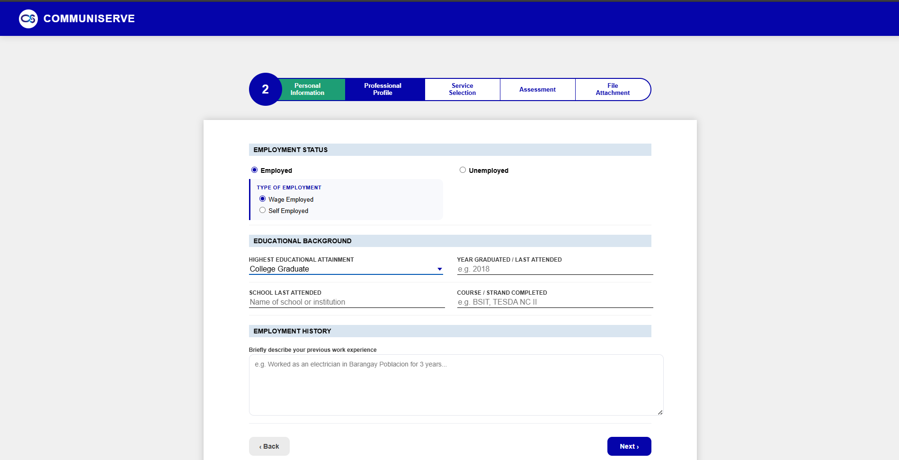
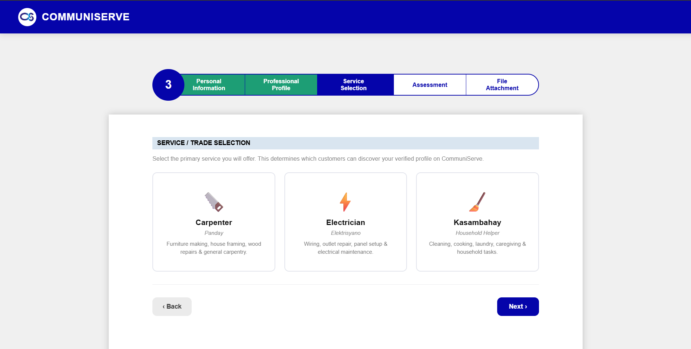
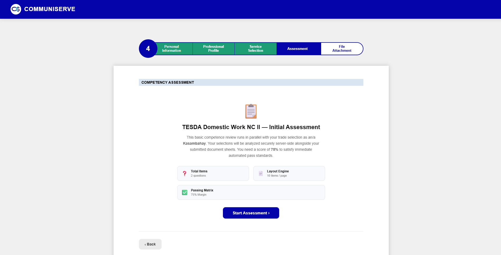
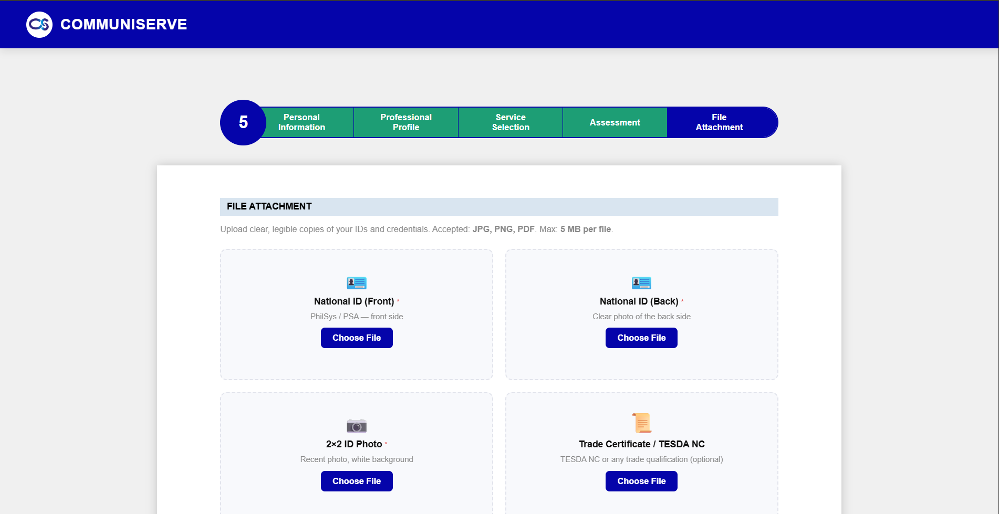
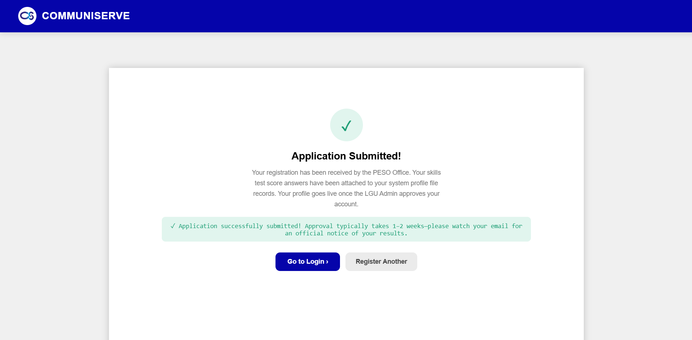
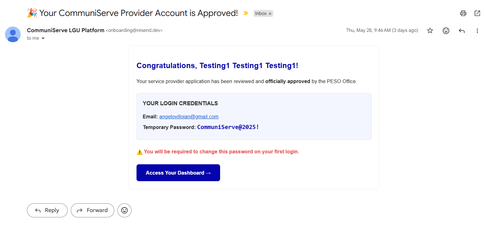

1. Getting Started
Learn the basics of using our platform as a customer.

2. Create Account
Follow the steps to create your account and start using our services.
.png)
Make sure to fill it out legibly and provide valid email address for verification.
3. Sign in Account
Follow the steps to sign in to your account.

Double-check your spelling and caps-lock state if you experience credential errors.
4. Find a Provider
Find local service providers and hire.

Be descriptive with your request details to help providers estimate the task accurately.
5. Track Your Request
Monitor the real-time progress status of your service requests.

Status badges change automatically in real-time as your service provider updates their progress.
6. Profile & Settings
Manage your personal details, location preferences, and contact records.

Keep your phone number accurate so service providers can successfully reach you upon request acceptance.
1. Getting Started
Learn how to join CommuniServe as an expert service provider.

Prepare your valid structural credentials and identification documents beforehand to ensure a smooth application process.
2. Registration — Step 1: Personal Information
Provide your legal name, contact credentials, and profile details.


Make sure to fill it out legibly and provide valid email address for verification.
Ensure your background status indicators (like 4Ps or PWD) match your government records for accurate profiling.
2. Registration — Step 2: Professional Profile
Provide your employment status, educational background, and work history.

Highlighting relevant past technical experiences helps the review panel build higher trust in your capability profile.
2. Registration — Step 3: Service Selection
Choose your primary service categories and specialized talents.

Make sure to choose the specific skill segment you are fully certified or prepared to handle safely.
2. Registration — Step 4: Assessment
You must pass this initial assessment test to qualify your profile for verification and service placement.


Ensure an uninterrupted network environment before tapping start; dropping early counts toward the score submission.
2. Registration — Step 5: File Attachment
Upload necessary identifying credentials to prepare for screening verification.



Upload clean, bright photos of your National ID. Blurry files or cut edges may cause unexpected verification processing delays or account rejections.
The system verification queue is manually checked by system administrators. Expect status alignment updates within 3-5 business days.
3. Sign in Account
Follow the steps to sign in to your account.
New accounts must enter the default credentials sent via email. You will be required to update this temporary password upon successful entry to secure your dashboard.
4. Verification
Short Description

5. Manage Requests
View, prioritize, or process job requests requested near you.

6. Update Status
Short description
7. Profile & Settings
Configure professional details and structural service scopes.